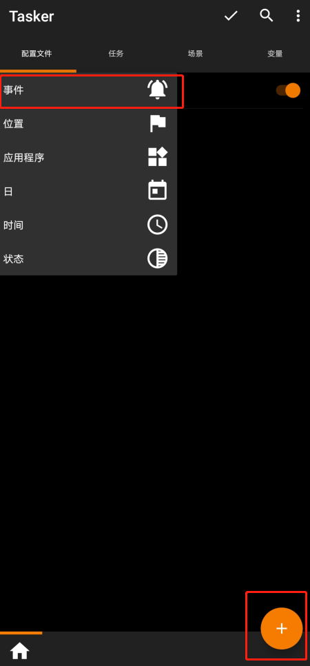
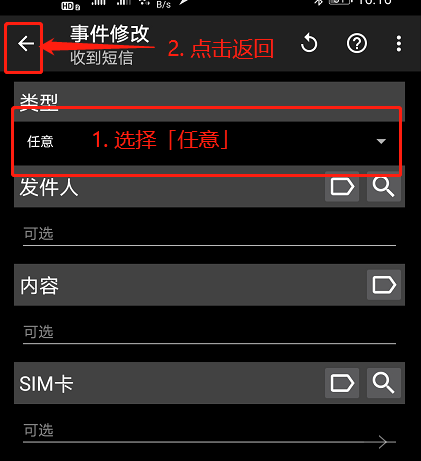
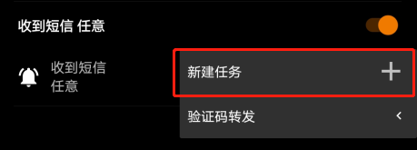
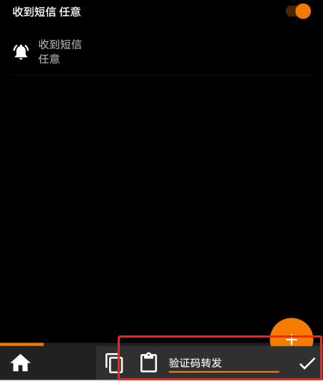
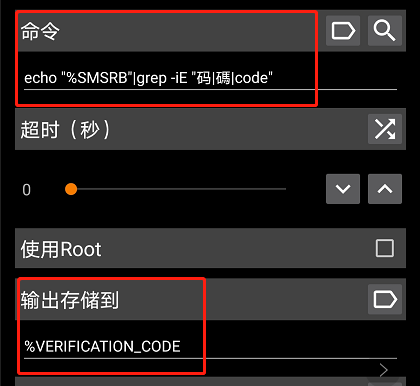
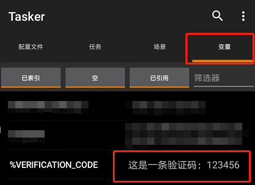
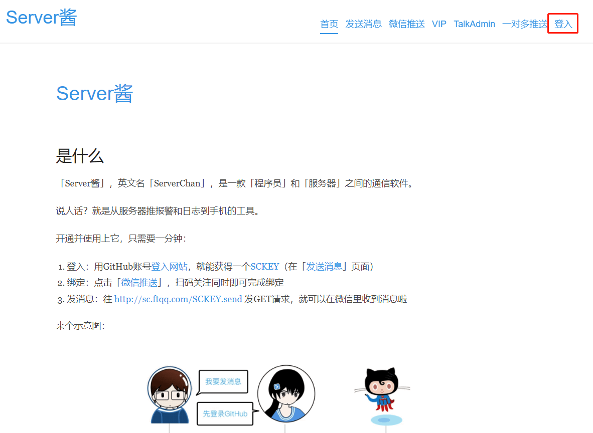
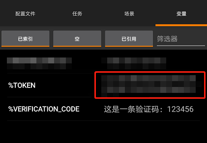

短信自动转发有很多使用场景，比如有两个单卡手机，一个手机不长用，但是要来接收验证码。这时候接收短信并直接推送给微信就方便的多； 我折腾这玩意最初的目的是因为和几个哥们合租的百度网盘，但是百度账号绑定的是我自己的手机号，为了哥们方便接受，便研究了一下这个功能； 原理是用Tasker 截取短信，并存储在变量中，再通过 HTTP 请求把内容输出出去。
前期准备
操作
截取短信
首先我们在 配置文件 Tab 栏 点击右下角的 + 号：

点击 事务 → 电话 → 收到短信
类型选 任意 后直接返回

点击「新建任务」：

这里要你随意输入一个名称，我输入 验证码转发，进入「任务编辑」页面。

点击右下角的 + 号，选择 代码 → 运行Shell命令
「命令」中输入： echo "%SMSRB"|grep -iE "码|碼|code"
「输入存储到」随意输入一个以 % 开头的变量，这里我输入了 %VERIFICATION_CODE：

点击左上角返回
再点击右上角的 ✓ 保存
这里主要是把带码、碼、code 的短信，放在
%VERIFICATION_CODE这个变量中
接下来我们来试试看 Tasker 能不能截取到短信；
我用另一个手机号给本机发送一条带“码”字的短信：
然后打开 Tasker，选择变量 Tab 栏：

果然短信已经存入变量中了。
推送到微信
推送到微信的话，我们要借助第三方信息推送平台。
这里我列举出 Server 酱 和 Push Plus（支持群组） 这两个平台，如果您习惯其他平台，方法类似，可以作为参考；
Server 酱
进入 Server 酱 官网
点击登入：

这里是直接用 Github 授权登录的，输入 Github 账号直接授权：

接下来要绑定微信，点击微信推送，那手机微信扫码后关注：

点击发送消息，会看到 Server 酱给你的 SCKEY：

为了方便以后修改，我们在手机 Tasker 中新建一个以 % 开头的变量，变量名随意，我命名 %TOKEN：

然后我们把获得的 SCKEY ，填入 %TOKEN 中：

新建一个任务
点击 网络 → HTTP Request，然后在「URL」输入:
https://sc.ftqq.com/%SCKEY.send?text=<这里把包括尖括号内的文字替换成想要的标题>&desp=%VERIFICATION_CODE
直接返回到首页，再点击右上角的 ✓ 保存，Server 酱的配置就完成啦！
我们来测试一条带验证码的短信，看看能不能推送到微信里：

微信收到Server酱推送啦，成功！